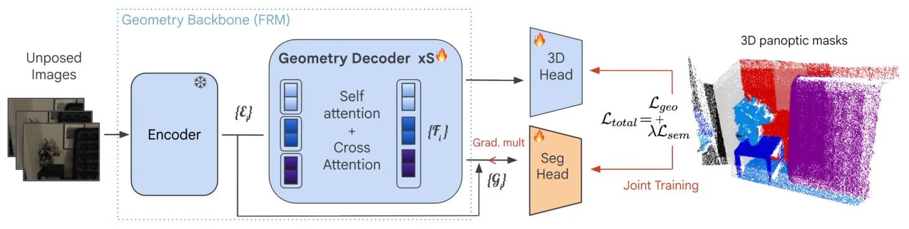
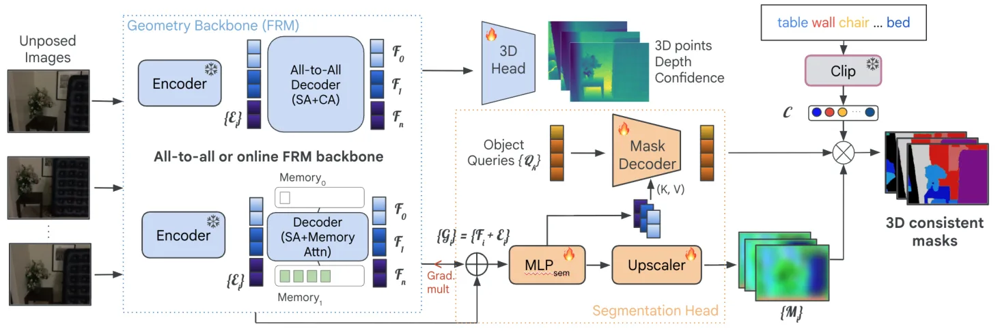

Pano3D：统一三维重建与全景分割Pano3D: Unified 3D Reconstruction and Panoptic Segmentation
对语义地图、动态目标剔除和可导航三维表示有潜在价值；但与在线 SLAM/位姿估计的耦合仍不明确，需要关注实时性、增量更新和位姿噪声鲁棒性。
一句话工作总结
Pano3D 在无相机参数的 feedforward 三维重建 backbone 上联合训练全景分割，使几何和语义能力相互增强。
摘要
近期 feedforward 3D reconstruction 网络在无需相机参数的稠密图像重建上表现突出，但将鲁棒语义理解融入这些模型仍是开放问题。Pano3D 在现有 3D 重建模型上加入 set-based mask decoder，在统一框架中同时执行 3D reconstruction 和 3D panoptic segmentation。模型通过几何损失与语义损失联合训练，二者相互促进；特征先由几何信息初始化，再微调为同时捕获几何与语义。该框架可适用于 online 和 all-to-all attention 两类重建 backbone，并在 ScanNet、ScanNet200、ScanNet++ 上取得 3D panoptic segmentation 的 SOTA 表现。
Recent advances in 3D feedforward reconstruction neural networks have achieved remarkable success in dense reconstruction from images without any camera parameters. Yet, equipping these models with robust semantic understanding remains an open problem. Here we introduce an approach that performs 3D reconstruction and 3D panoptic segmentation in a unified framework. We build on existing 3D reconstruction models and augment them with a set-based mask decoder. The approach is jointly trained with a geometric and semantic loss, which are shown to be mutually beneficial. More precisely, the features are initialized from the geometric information and then finetuned to capture jointly geometry and semantics. We demonstrate the generality of our approach by successfully applying our framework both to online and all-to-all attention reconstruction backbones. Our method achieves state-of-the-art performance in 3D panoptic segmentation across ScanNet, ScanNet200, and ScanNet++ datasets. Ablation studies show that such joint training of a unified model equips 3D feedforward reconstruction neural networks with panoptic segmentation and yields mutually beneficial improvements.
中文解读摘录
- 链接：abs / PDF；项目页：https://victorbbt.github.io/Pano3D/；类别：cs.CV；采集 score=10。
- 核心思路：在不依赖相机参数的 feedforward 3D reconstruction backbone 上增加 set-based mask decoder，统一做 3D 重建与 3D panoptic segmentation。
- 方法要点：几何损失与语义损失联合训练；先由几何信息初始化特征，再微调为几何-语义联合表示；可适配 online 与 all-to-all attention 重建 backbone。
- 关注点：对语义地图、动态场景过滤和可导航 3D 表示有潜在价值；需看其与 SLAM 在线增量建图、位姿噪声、稀疏视角和跨数据集泛化的兼容性。
图表/页面预览

{kind=link}

{kind=link}
